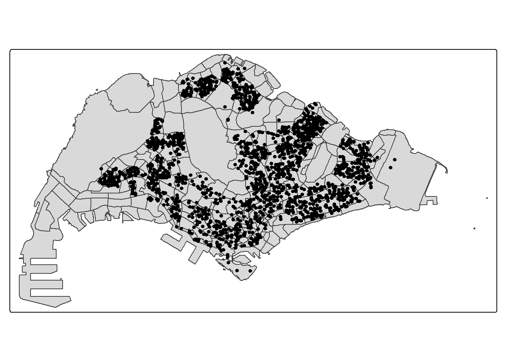

pacman::p_load(sf, terra, spatstat, tmap, rvest, tidyverse)Hands-on_Ex02a
Overview
Spatial Point Pattern Analysis (SPPA) is the evaluation of the pattern or distribution of a set of points on a surface. The points may represent:
Events such as crimes, traffic accidents, or disease onsets, or
Business services (e.g., coffee shops and fast-food outlets) or facilities such as childcare centres and eldercare centres.
First-order Spatial Point Pattern Analysis (1st-SPPA) studies how point intensity (density) varies across space. This will help answer questions like:
Are there more points in some areas than others?
Where are the hotspots or clusters?
Datasets
The following datasets will be used:
Child Care Services kml data file (Child Care Services)
Master Plan 2019 Subzone Boundary (No Sea) kml data file (Master plan 2019)
Installing and Loading the R packages
The code chunk below uses p_load() of pacman package to check if the following packages are installed in the computer. If they are, then they will be launched into R.
sf - Provides the core tools for handling spatial data
spatstat - A package used for spatial point pattern analysis
terra - Provides tools for working with vector spatial data
tmap - A package used for producing maps for visualisation
rvest - A web scraping package to download and parse data from websites
Importing and wrangling the data
Use the code chunk below to import Master Plan 2019 Subzone (No Sea) data set into R environment. It imports the masterplan data, removes the Z (elevation) and M (measure) diemension, and transforms into SVY21.
mpsz_sf <- st_read("data/MasterPlan2019SubzoneBoundaryNoSeaKML.kml") %>%
st_zm(drop = TRUE, what = "ZM") %>% st_transform(crs = 3414)Reading layer `URA_MP19_SUBZONE_NO_SEA_PL' from data source
`C:\Users\zongy\OneDrive\Desktop\SMU\ISSS626 - Geospatial Analytics\zongyin-tan\ISSS626-Geospatial-zytan\Hands-on_Ex\Hands-on_Ex02a\data\MasterPlan2019SubzoneBoundaryNoSeaKML.kml'
using driver `KML'
Simple feature collection with 332 features and 2 fields
Geometry type: MULTIPOLYGON
Dimension: XY
Bounding box: xmin: 103.6057 ymin: 1.158699 xmax: 104.0885 ymax: 1.470775
Geodetic CRS: WGS 84A function called extract_kml_field for extracting REGION_N, PLN_AREA_N, SUBZONE_N, SUBZONE_C from Description field by using the code chunk below
extract_kml_field <- function(html_text, field_name) {
if (is.na(html_text) || html_text == "") return(NA_character_)
page <- read_html(html_text)
rows <- page %>% html_elements("tr")
value <- rows %>%
keep(~ html_text2(html_element(.x, "th")) == field_name) %>%
html_element("td") %>%
html_text2()
if (length(value) == 0) NA_character_ else value
}The code chunk below creates new columns REGION_N, PLN_AREA_N, SUBZONE_N and SUBZONE_C using the function defined above ensuring the fields are in proper structure.
mpsz_sf <- mpsz_sf %>%
mutate(
REGION_N = map_chr(Description, extract_kml_field, "REGION_N"),
PLN_AREA_N = map_chr(Description, extract_kml_field, "PLN_AREA_N"),
SUBZONE_N = map_chr(Description, extract_kml_field, "SUBZONE_N"),
SUBZONE_C = map_chr(Description, extract_kml_field, "SUBZONE_C")
) %>%
select(-Name, -Description) %>%
relocate(geometry, .after = last_col())We then proceed to remove the unwanted zones, SOUTHERN GROUP, WESTERN ISLANDS and NORTH-EASTERN ISLANDS, leaving us with the main Singapore subzones using the following code chunk.
mpsz_cl <- mpsz_sf %>%
filter(SUBZONE_N != "SOUTHERN GROUP",
PLN_AREA_N != "WESTERN ISLANDS",
PLN_AREA_N != "NORTH-EASTERN ISLANDS")Finally, writing the cleaned data into an rds file.
write_rds(mpsz_cl,
"data/mpsz_cl.rds")The code chunk below will be used to import the Childcare Service data downloaded from data.gov.sg into R environment as sf data frame called chilcare_sf.
childcare_sf <- st_read("data/ChildCareServices.kml") %>%
st_zm(drop = TRUE, what = "ZM") %>%
st_transform(crs = 3414)Reading layer `CHILDCARE' from data source
`C:\Users\zongy\OneDrive\Desktop\SMU\ISSS626 - Geospatial Analytics\zongyin-tan\ISSS626-Geospatial-zytan\Hands-on_Ex\Hands-on_Ex02a\data\ChildCareServices.kml'
using driver `KML'
Simple feature collection with 1925 features and 2 fields
Geometry type: POINT
Dimension: XYZ
Bounding box: xmin: 103.6878 ymin: 1.247759 xmax: 103.9897 ymax: 1.462134
z_range: zmin: 0 zmax: 0
Geodetic CRS: WGS 84Mapping the geospatial data sets
After checking the referencing system of each geospatial data data frame, it is also useful for us to plot a map to show their spatial patterns. We will use the code chunk below to plot the map.
plot(st_geometry(mpsz_cl), col = "lightgrey") # fills polygons with light grey
plot(st_geometry(childcare_sf), add = TRUE, pch = 20, col = "black") # plots points clearly